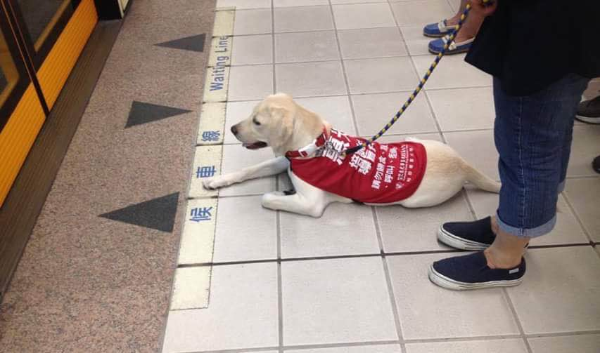

EDUCATION
Taipei, Taiwan, 09/2011 – 06/2016
National Chengchi University
- Degree: Bachelor of Arts in Journalism
- GPA: 3.98/4.0
- Relevant Coursework: Statistics, Linear Algebra, Probability, Data Structure, Object-oriented Programming, Database Management Systems, Java Programming, Data Analysis for Social Media, Data Science and Big Data Analytics
- Certificate of Presidential Award for two semesters
Cologne, Germany, 08/2013 – 06/2014
Cologne Business School
- Degree: Bachelor of Arts in International Business
- Relevant Coursework: Cultural Marketing, Business Process Planning and Consulting Issues, Comparative International Management
- GPA: 1.7/5.0
- Sponsored by Ministry of Education (around $6,000)
- Sponsored by College of Communication, NCCU
Online, 02/2016 - 05/2016
Coursera
- Earned a verified certificate with full marks in “Python for Everybody Specialization” offered by University of Michigan in one month.
- Completed The Data Scientist’s Toolbox and R programming in “Data Science Specialization” offered by Johns Hopkins University.
Taipei, Taiwan, 09/2008 – 06/2011
Taipei WEGO Private Bilingual Senior High School
WORK EXPERIENCE
Beijing, China, 07/2016 – Present
Data on Demand (Beijing) Co., Ltd.
Marketing Specialist
- Optimized keywords based on search terms reports of Baidu Online Marketing Service and monitored figures through Baidu Statistics to avoid vicious clicks on our ads.
- Increased subscribers on our WeChat Official Account Platform (wechat id:imobilevi) by 450% in three months and has transformed it into a new channel with great potential to find B2B customers.
- Initiated weekly marketing leads reports and developed a report dashboard to review leads generation effectiveness by analyzing monthly ROI of each lead source.
- Organized details of 2016 MicroStrategy Symposium in Beijing for 250+ participants and was highly praised by the guest speaker from headquarters as one of the most impressive symposiums he had ever attended. Michael Saylor, the founder of MicroStrategy, is thus planning to be the guest speaker for next year’s symposium in Beijing.
- Translated MicroStrategy Tutorial documents into Chinese and created localized contents to cater to Chinese clients.
- Supported EDM creation, webinar organization, print catalog edition, new tools/technology adoption, official article composition, and translation of learning documents.
Taipei, Taiwan, 07/2014 – 08/2014
Global Views Monthly
Journalist Intern
- Cleaned and analyzed survey data on the satisfaction of county mayors and city magistrates with Minitab and produced two graphs.
- Assisted two other journalists to formulate a cover story on European Education with many of my ideas being adopted.
- Other tasks included contacting overseas interviewees, information research, note-taking, and German to Chinese translation.
Taipei, Taiwan, 09/2012 – 06/2013
University News
Editor and Journalist
- Covered 10+ international news events on college students, and edited news videos.
- Modified web crawlers to fit our needs to collect data, and used D3 library to visualize data on website.
EXTRACURRICULAR ACTIVITIES
Beijing, China, 10/2016 – Present
English Learning Club
Instructor
- Created an English environment once a week for 10 colleagues to practice oral and listening skills.
- Support BI engineers and technical supports to pass MicroStrategy Certification. Lessons mainly focus on comprehension of complex sentence structures and vocabulary usage.
- Teach Business Assistants and HR managers how to write formal English business E-mails.
Taipei, Taiwan, 09/2012 – 06/2013
Youth Association of International Conferences (YAIC)
Marketing Director
- Attracted 55 new members at student club expo to come to our orientation party with 43 of them enrolling – a big number for an academic club in my university.
- Initiated the idea to adapt serious international news in a more eye-catching way to raise awareness of international affairs on our club’s Facebook fan page.
- Assisted our club to acquire financial aid from school and was awarded the Best Academic Club due to exceptional administration.
Taipei, Taiwan, 09/2012 – 06/2013
Taipei Model United Nations
Co-Chair of Asian Development Bank
- Drafted a study guide on the committee topics of poverty issue in South Asia and was selected as the topic to discuss in the committee.
- Chaired sessions at the Asian Development Bank.
- Promoted the principles, rules, and procedures of the UN to university students
INTERNATIONAL EXPERIENCE
Brussels, Belgium, 03/2014
Harvard World Model United Nations (WorldMUN)
Delegate of Croatia, Special Political and Decolonization Committee (SPECPOL)
- Contributed to the draft resolution for the issues discussed. The draft resolution was the only one elected and passed in the conference.
Vienna, Austria, 08/2013
Vienna International Model United Nations (VIMUN)
Delegate of Republic of Korea, Human Rights Council (HRC)
- Discussed contemporary human rights treaties and the need of re-drafting to better adapt to the humanitarian crisis we are facing today.
Beijing, China, 03/2013
Asian International Model United Nations
Delegate of Denmark, Futuristic Security Council (FSC)
- Discussed Polar Navigation and Resources Allocation.
- Won oral recognition.
Volunteer Experience
Siem Reap, Cambodia, 01/2012 - 02/2012
ELIV International Service
Volunteer, Eco-friendly Orphanage Construction Project
- Learned to identify green building materials.
- Participated in the latter phase of construction, including drainage excavation, bamboo wall construction, and the installation of a ceramic tile on the floor.
- Introduced advanced technology for a more efficient irrigation system into local community.
NingXia, China, 07/2012 – 08/2012
Taiwan Social Welfare Action Association Waker Group
Volunteer, Middle School Summer Camp
- Promoted sanitation awareness to middle school students through series of fun activities.
- Taught middle school students to sing English songs and play games in English.
Taipei, Taiwan, 07/2013 – 07/2014
Huikuang Guide Dog Foundation Taiwan
Puppy Walker
- Was responsible for the early socialization and education of a guide dog.
- Supported the foundation’s fundraising events to promote a better understanding of all guide dogs in Taiwan and build an inclusive society for the blind who use guide dogs.

SKILLS
Language Skills
- Chinese
- Native
- English
- Fluent (TOEFL:107/120)
- German
- Intermediate (B2)
Technical Skills
- Programming
- Java、Python、Javascript、HTML、C++、R、MySQL
- Statistical software
-
SPSS、Minitab
- Digital Marketing Tools
- Adobe Photoshop CC, Adobe Premiere Pro CC, Baidu Online Marketing Service, Baidu Statistics
- Data Visualization Tools
- MicroStrategy Desktop
- Office Tools
- MS Word, Excel, PowerPoint